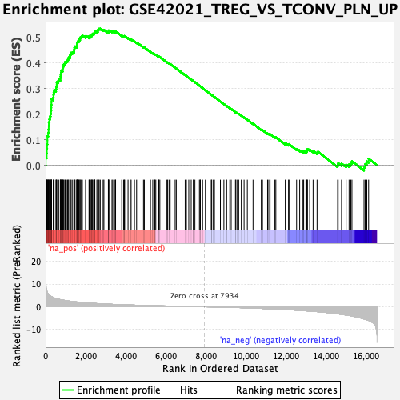
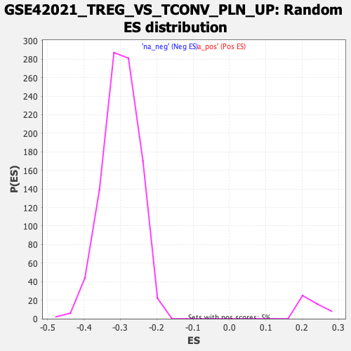

| | | Dataset | DE_genes2 |
| Phenotype | NoPhenotypeAvailable |
| Upregulated in class | na_pos |
| GeneSet | GSE42021_TREG_VS_TCONV_PLN_UP |
| Enrichment Score (ES) | 0.53499675 |
| Normalized Enrichment Score (NES) | 2.3677318 |
| Nominal p-value | 0.0 |
| FDR q-value | 0.0 |
| FWER p-Value | 0.0 |
Table: GSEA Results Summary

Fig 1: Enrichment plot: GSE42021_TREG_VS_TCONV_PLN_UP
Profile of the Running ES Score & Positions of GeneSet Members on the Rank Ordered List
| PROBE | GENE SYMBOL | GENE_TITLE | RANK IN GENE LIST | RANK METRIC SCORE | RUNNING ES | CORE ENRICHMENT | | 1 | ISG15 | | | 7 | 11.559 | 0.0304 | Yes |
| 2 | RNF19B | | | 56 | 7.227 | 0.0467 | Yes |
| 3 | PLSCR1 | | | 62 | 7.005 | 0.0650 | Yes |
| 4 | UBE2L6 | | | 74 | 6.681 | 0.0822 | Yes |
| 5 | PARP12 | | | 90 | 6.194 | 0.0977 | Yes |
| 6 | SLC12A7 | | | 91 | 6.184 | 0.1142 | Yes |
| 7 | STAT1 | | | 129 | 5.696 | 0.1271 | Yes |
| 8 | IRF1 | | | 149 | 5.467 | 0.1405 | Yes |
| 9 | HERC6 | | | 157 | 5.397 | 0.1545 | Yes |
| 10 | MX2 | | | 162 | 5.325 | 0.1684 | Yes |
| 11 | ISG20 | | | 191 | 5.144 | 0.1804 | Yes |
| 12 | TRIM21 | | | 220 | 4.877 | 0.1917 | Yes |
| 13 | IFI44L | | | 246 | 4.677 | 0.2026 | Yes |
| 14 | PLAUR | | | 272 | 4.561 | 0.2132 | Yes |
| 15 | C1R | | | 280 | 4.530 | 0.2249 | Yes |
| 16 | USP18 | | | 284 | 4.503 | 0.2367 | Yes |
| 17 | IFI35 | | | 292 | 4.461 | 0.2481 | Yes |
| 18 | MX1 | | | 294 | 4.454 | 0.2599 | Yes |
| 19 | TYMP | | | 384 | 4.064 | 0.2653 | Yes |
| 20 | THEMIS2 | | | 395 | 4.002 | 0.2753 | Yes |
| 21 | PML | | | 405 | 3.956 | 0.2853 | Yes |
| 22 | IFIT1 | | | 424 | 3.910 | 0.2946 | Yes |
| 23 | RSAD2 | | | 518 | 3.663 | 0.2987 | Yes |
| 24 | IL10RB | | | 530 | 3.638 | 0.3077 | Yes |
| 25 | IRF7 | | | 554 | 3.560 | 0.3158 | Yes |
| 26 | PSMB10 | | | 555 | 3.560 | 0.3253 | Yes |
| 27 | CXCL10 | | | 623 | 3.364 | 0.3301 | Yes |
| 28 | IFI27 | | | 665 | 3.279 | 0.3364 | Yes |
| 29 | LGALS3BP | | | 741 | 3.127 | 0.3401 | Yes |
| 30 | PRKD2 | | | 743 | 3.124 | 0.3484 | Yes |
| 31 | MYD88 | | | 757 | 3.108 | 0.3559 | Yes |
| 32 | DRAM1 | | | 770 | 3.084 | 0.3633 | Yes |
| 33 | CXCL2 | | | 773 | 3.082 | 0.3714 | Yes |
| 34 | EHD4 | | | 853 | 2.936 | 0.3744 | Yes |
| 35 | CXCL11 | | | 855 | 2.930 | 0.3822 | Yes |
| 36 | DDX58 | | | 877 | 2.899 | 0.3886 | Yes |
| 37 | IFIT3 | | | 903 | 2.860 | 0.3947 | Yes |
| 38 | OAS3 | | | 956 | 2.785 | 0.3989 | Yes |
| 39 | NAPA | | | 976 | 2.762 | 0.4051 | Yes |
| 40 | OASL | | | 1040 | 2.688 | 0.4084 | Yes |
| 41 | B2M | | | 1099 | 2.604 | 0.4118 | Yes |
| 42 | GSTK1 | | | 1124 | 2.572 | 0.4172 | Yes |
| 43 | SP110 | | | 1152 | 2.536 | 0.4223 | Yes |
| 44 | PSME2 | | | 1213 | 2.451 | 0.4251 | Yes |
| 45 | OAS1 | | | 1220 | 2.445 | 0.4313 | Yes |
| 46 | GTPBP1 | | | 1242 | 2.427 | 0.4365 | Yes |
| 47 | IRF9 | | | 1277 | 2.381 | 0.4407 | Yes |
| 48 | IFITM3 | | | 1347 | 2.319 | 0.4427 | Yes |
| 49 | CDC42EP4 | | | 1416 | 2.252 | 0.4445 | Yes |
| 50 | IL22RA1 | | | 1425 | 2.244 | 0.4500 | Yes |
| 51 | MSRB1 | | | 1430 | 2.238 | 0.4557 | Yes |
| 52 | TRIM14 | | | 1437 | 2.233 | 0.4613 | Yes |
| 53 | GBP1 | | | 1468 | 2.209 | 0.4654 | Yes |
| 54 | RNF114 | | | 1550 | 2.128 | 0.4661 | Yes |
| 55 | IFI44 | | | 1561 | 2.121 | 0.4711 | Yes |
| 56 | CTSS | | | 1570 | 2.115 | 0.4762 | Yes |
| 57 | TRAFD1 | | | 1581 | 2.107 | 0.4812 | Yes |
| 58 | CASP7 | | | 1606 | 2.083 | 0.4853 | Yes |
| 59 | STAT2 | | | 1658 | 2.029 | 0.4876 | Yes |
| 60 | CFB | | | 1669 | 2.020 | 0.4924 | Yes |
| 61 | IFITM1 | | | 1717 | 1.977 | 0.4948 | Yes |
| 62 | HLA-F | | | 1718 | 1.976 | 0.5000 | Yes |
| 63 | HLA-C | | | 1765 | 1.943 | 0.5024 | Yes |
| 64 | GTF2B | | | 1805 | 1.911 | 0.5051 | Yes |
| 65 | HLA-B | | | 1833 | 1.892 | 0.5085 | Yes |
| 66 | IFI30 | | | 1993 | 1.760 | 0.5034 | Yes |
| 67 | ADAR | | | 2014 | 1.744 | 0.5069 | Yes |
| 68 | SECTM1 | | | 2167 | 1.639 | 0.5019 | Yes |
| 69 | CCL2 | | | 2172 | 1.637 | 0.5061 | Yes |
| 70 | BTN3A3 | | | 2267 | 1.580 | 0.5045 | Yes |
| 71 | BST2 | | | 2284 | 1.571 | 0.5077 | Yes |
| 72 | PANX1 | | | 2310 | 1.556 | 0.5103 | Yes |
| 73 | SAMHD1 | | | 2326 | 1.545 | 0.5135 | Yes |
| 74 | OAS2 | | | 2358 | 1.520 | 0.5157 | Yes |
| 75 | IDO1 | | | 2420 | 1.478 | 0.5159 | Yes |
| 76 | PHF11 | | | 2434 | 1.473 | 0.5190 | Yes |
| 77 | BCL2L13 | | | 2454 | 1.464 | 0.5217 | Yes |
| 78 | MAFF | | | 2457 | 1.463 | 0.5255 | Yes |
| 79 | APOL1 | | | 2556 | 1.411 | 0.5233 | Yes |
| 80 | LDLR | | | 2601 | 1.387 | 0.5243 | Yes |
| 81 | XAF1 | | | 2604 | 1.386 | 0.5279 | Yes |
| 82 | VPS9D1 | | | 2615 | 1.378 | 0.5309 | Yes |
| 83 | GBP2 | | | 2643 | 1.365 | 0.5329 | Yes |
| 84 | STAT3 | | | 2673 | 1.352 | 0.5347 | Yes |
| 85 | OGFR | | | 2727 | 1.319 | 0.5350 | Yes |
| 86 | TRANK1 | | | 2869 | 1.259 | 0.5297 | No |
| 87 | MAX | | | 2909 | 1.234 | 0.5306 | No |
| 88 | SLC25A28 | | | 3130 | 1.142 | 0.5202 | No |
| 89 | NREP | | | 3142 | 1.137 | 0.5226 | No |
| 90 | IFIT2 | | | 3146 | 1.135 | 0.5254 | No |
| 91 | CD47 | | | 3151 | 1.131 | 0.5282 | No |
| 92 | RTP4 | | | 3209 | 1.108 | 0.5276 | No |
| 93 | LAP3 | | | 3311 | 1.072 | 0.5243 | No |
| 94 | APOL2 | | | 3351 | 1.058 | 0.5247 | No |
| 95 | HLA-A | | | 3436 | 1.026 | 0.5223 | No |
| 96 | C1S | | | 3483 | 1.011 | 0.5222 | No |
| 97 | TMEM140 | | | 3492 | 1.007 | 0.5244 | No |
| 98 | OPTN | | | 3798 | 0.894 | 0.5081 | No |
| 99 | HEG1 | | | 3888 | 0.871 | 0.5050 | No |
| 100 | APOL3 | | | 3934 | 0.857 | 0.5045 | No |
| 101 | TRIM22 | | | 3942 | 0.854 | 0.5064 | No |
| 102 | TDRD7 | | | 4113 | 0.805 | 0.4981 | No |
| 103 | APOL6 | | | 4224 | 0.770 | 0.4934 | No |
| 104 | CEACAM1 | | | 4266 | 0.760 | 0.4930 | No |
| 105 | NOD1 | | | 4433 | 0.712 | 0.4847 | No |
| 106 | TNFSF10 | | | 4539 | 0.682 | 0.4801 | No |
| 107 | C5orf15 | | | 4607 | 0.661 | 0.4777 | No |
| 108 | CCDC68 | | | 4882 | 0.598 | 0.4626 | No |
| 109 | SOCS1 | | | 4925 | 0.588 | 0.4616 | No |
| 110 | IFIH1 | | | 5232 | 0.510 | 0.4442 | No |
| 111 | IFITM2 | | | 5344 | 0.482 | 0.4387 | No |
| 112 | DDX60 | | | 5440 | 0.463 | 0.4341 | No |
| 113 | LARS2 | | | 5455 | 0.459 | 0.4345 | No |
| 114 | NFE2L3 | | | 5497 | 0.450 | 0.4332 | No |
| 115 | SERPING1 | | | 5646 | 0.417 | 0.4252 | No |
| 116 | TRIM38 | | | 5653 | 0.415 | 0.4260 | No |
| 117 | SP140L | | | 5699 | 0.405 | 0.4243 | No |
| 118 | HK1 | | | 6052 | 0.335 | 0.4036 | No |
| 119 | OSMR | | | 6089 | 0.328 | 0.4023 | No |
| 120 | CEBPD | | | 6160 | 0.314 | 0.3989 | No |
| 121 | IL15 | | | 6214 | 0.299 | 0.3964 | No |
| 122 | SPATS2L | | | 6462 | 0.252 | 0.3820 | No |
| 123 | SP100 | | | 6519 | 0.240 | 0.3792 | No |
| 124 | TLR3 | | | 6804 | 0.183 | 0.3623 | No |
| 125 | RRAGC | | | 6961 | 0.162 | 0.3532 | No |
| 126 | TRIM5 | | | 7022 | 0.151 | 0.3499 | No |
| 127 | CSF1 | | | 7141 | 0.127 | 0.3430 | No |
| 128 | LMO2 | | | 7262 | 0.104 | 0.3360 | No |
| 129 | ADAMTSL3 | | | 7374 | 0.084 | 0.3294 | No |
| 130 | SAMD9 | | | 7378 | 0.084 | 0.3294 | No |
| 131 | RASGRP3 | | | 7447 | 0.074 | 0.3255 | No |
| 132 | JADE2 | | | 7672 | 0.037 | 0.3119 | No |
| 133 | CBR3 | | | 7714 | 0.030 | 0.3094 | No |
| 134 | CXCL5 | | | 7716 | 0.030 | 0.3095 | No |
| 135 | NKX3-1 | | | 7830 | 0.012 | 0.3026 | No |
| 136 | TAPBP | | | 7970 | -0.006 | 0.2941 | No |
| 137 | ATF3 | | | 8267 | -0.051 | 0.2761 | No |
| 138 | ID4 | | | 8271 | -0.052 | 0.2761 | No |
| 139 | BMPR2 | | | 8353 | -0.067 | 0.2713 | No |
| 140 | GALNT12 | | | 8421 | -0.079 | 0.2674 | No |
| 141 | IFIT5 | | | 8719 | -0.135 | 0.2496 | No |
| 142 | RBCK1 | | | 8893 | -0.169 | 0.2394 | No |
| 143 | WSB1 | | | 9019 | -0.196 | 0.2323 | No |
| 144 | HERC5 | | | 9022 | -0.198 | 0.2327 | No |
| 145 | RAB27A | | | 9187 | -0.236 | 0.2233 | No |
| 146 | CFH | | | 9201 | -0.239 | 0.2232 | No |
| 147 | NMI | | | 9257 | -0.257 | 0.2205 | No |
| 148 | LAMP3 | | | 9469 | -0.306 | 0.2084 | No |
| 149 | ZNF107 | | | 9493 | -0.312 | 0.2078 | No |
| 150 | ZNF410 | | | 9566 | -0.330 | 0.2043 | No |
| 151 | CLEC2B | | | 9631 | -0.347 | 0.2013 | No |
| 152 | PLSCR4 | | | 9761 | -0.389 | 0.1944 | No |
| 153 | TAP2 | | | 9900 | -0.428 | 0.1871 | No |
| 154 | FOSL2 | | | 10062 | -0.477 | 0.1786 | No |
| 155 | HLA-E | | | 10347 | -0.567 | 0.1627 | No |
| 156 | IL12A | | | 10759 | -0.711 | 0.1394 | No |
| 157 | IFI16 | | | 10817 | -0.735 | 0.1379 | No |
| 158 | DOCK4 | | | 11072 | -0.832 | 0.1246 | No |
| 159 | IRF8 | | | 11133 | -0.854 | 0.1232 | No |
| 160 | EIF2AK2 | | | 11197 | -0.880 | 0.1217 | No |
| 161 | PMAIP1 | | | 11436 | -0.983 | 0.1097 | No |
| 162 | BATF3 | | | 11484 | -1.000 | 0.1095 | No |
| 163 | IGFLR1 | | | 11955 | -1.198 | 0.0839 | No |
| 164 | ZNF277 | | | 11985 | -1.214 | 0.0854 | No |
| 165 | CALCOCO2 | | | 12117 | -1.279 | 0.0808 | No |
| 166 | FAS | | | 12140 | -1.297 | 0.0829 | No |
| 167 | ZRSR2 | | | 12519 | -1.485 | 0.0637 | No |
| 168 | DCP1A | | | 12673 | -1.577 | 0.0586 | No |
| 169 | CREM | | | 12837 | -1.679 | 0.0531 | No |
| 170 | MSX1 | | | 12872 | -1.697 | 0.0555 | No |
| 171 | TLK2 | | | 12985 | -1.756 | 0.0533 | No |
| 172 | RPS6KC1 | | | 13025 | -1.783 | 0.0557 | No |
| 173 | UBE2D1 | | | 13044 | -1.793 | 0.0594 | No |
| 174 | PSMA4 | | | 13059 | -1.804 | 0.0633 | No |
| 175 | PCLO | | | 13170 | -1.872 | 0.0616 | No |
| 176 | USP33 | | | 13342 | -1.982 | 0.0564 | No |
| 177 | JAK2 | | | 13540 | -2.123 | 0.0500 | No |
| 178 | C12orf4 | | | 13583 | -2.152 | 0.0532 | No |
| 179 | NXT2 | | | 14565 | -3.061 | 0.0013 | No |
| 180 | TAP1 | | | 14592 | -3.101 | 0.0079 | No |
| 181 | CTSL | | | 14760 | -3.315 | 0.0066 | No |
| 182 | RPS6KA5 | | | 14989 | -3.629 | 0.0023 | No |
| 183 | LSM6 | | | 15136 | -3.827 | 0.0035 | No |
| 184 | VRK2 | | | 15224 | -3.955 | 0.0087 | No |
| 185 | FAM111A | | | 15280 | -4.085 | 0.0163 | No |
| 186 | TOP1 | | | 15882 | -5.336 | -0.0063 | No |
| 187 | FMR1 | | | 15943 | -5.491 | 0.0047 | No |
| 188 | NBN | | | 16021 | -5.731 | 0.0152 | No |
| 189 | USP15 | | | 16111 | -5.981 | 0.0257 | No |
Table: GSEA details [plain text format]

Fig 2: GSE42021_TREG_VS_TCONV_PLN_UP: Random ES distribution
Gene set null distribution of ES for GSE42021_TREG_VS_TCONV_PLN_UP